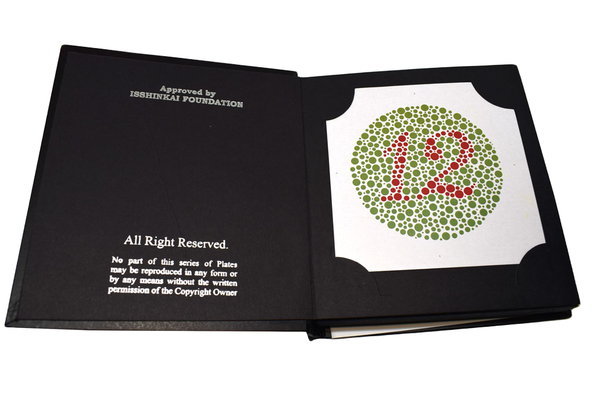
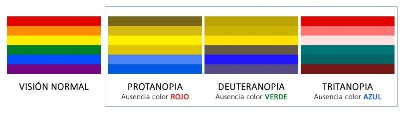

¿Qué es y cómo se realiza?
Inventado en la Universidad de Tokio por el doctor Shinobu Ishihara en 1917, el libro completo consta de 38 láminas formadas por círculos de distintos tamaños y matices que ocultan números o laberintos para niños.
La primera lámina contiene el número 12, que funciona como lámina de control visible tanto para visión normal como para personas con discromatopsias. En evaluación clínica se utiliza luz natural, una distancia aproximada de 75 cm y un tiempo breve (unos 3 segundos por lámina).
¿Qué diagnostica exactamente?
El Test de Ishihara detecta con gran precisión alteraciones en el eje rojo-verde (conos rojos L y conos verdes M), tanto congénitas como adquiridas, y también ayuda en controles del nervio óptico.
No está diseñado para discriminar por sí solo anomalías del eje azul-amarillo (Tritan), para las cuales se complementa con pruebas de ordenamiento cromático como el Test de Farnsworth.
- Protanopía (defecto protan): alteración o ausencia de conos sensibles al color rojo.
- Deuteranopía (defecto deutan): alteración o ausencia de conos sensibles al color verde.
- Tritanopía (defecto tritan): alteración o ausencia de conos sensibles al color azul.
- Acromatopsia: ausencia o disfunción general de conos (visión en escala de grises).
